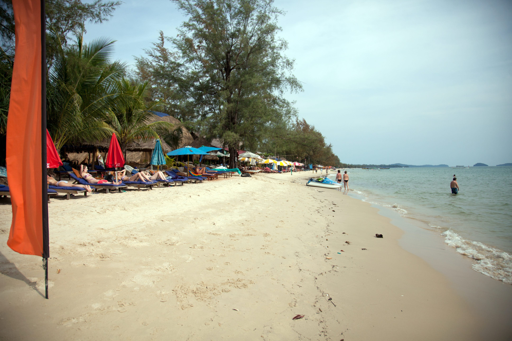
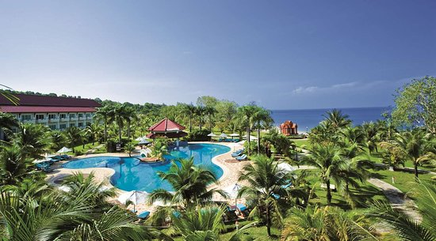
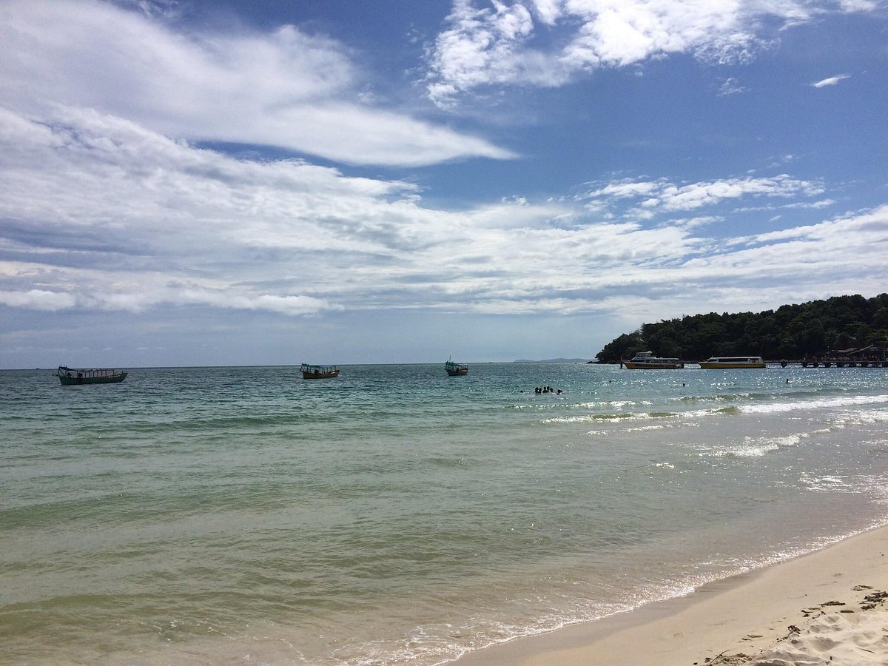

Sihanoukville
'Beach town', 'port community', 'fledgling resort destination' - all describe Sihanoukville, Cambodia's premier beach town. Sihanoukville's white sand beaches and warm Gulf of Thailand waters combine with a laid back, beachy atmosphere to provide a great little tropical getaway. Sihanoukville is a place to unwind by the beach, enjoy the fresh from-the-ocean seafood, take in a snorkeling or scuba trip, and generally slow-down, lay back and chill-out. Sihanoukville has a different look and feel than most Cambodian towns. Constructed as a port city in the late 1950s, the town is much newer, more urban and cosmopolitan than most Cambodian provincial cities.
Nowadays, Sihanoukville is as much a beach town as it is a port town, catering to beach-going weekenders from Phnom Penh as well as a steadily increasing number of foreign visitors. Still, the pace of life in Sihanoukville is very relaxed. Cows occasionally wander the main road, outside town foreign faces draw smiles and curious stares, and most of the beaches offer only beach umbrellas, thatched roofed eateries, and a growing number of restaurants, bungalows and hotels. Sihanoukville has a more than ample supply of accommodations, including a 5-star resort complex on Sokha Beach, several mid-range places downtown and at the beaches, a few 'upscale' three-star hotels, and dozens of budget guesthouses, especially on Weather Station Hill (Victory Hill). Considering the moderate number of visitors to Sihanoukville, the town offers a surprising number and variety of restaurants and bars. Fresh seafood, especially crab, prawns and ocean fish, has always been one of the town's biggest draws, but there is also a wide variety of places offering foreign cuisines - Australian, French, Indian, German, Sri Lankan, British, Italian, pizza places, a couple of western bakeries and even a espresso coffee shop. And these days Sihanoukville offers a pretty good night life as well with a wide variety of bars staying open well into the wee hours, especially on Weather Station Hill, in the downtown area, and the beach bars on Ochheuteal, Serendipity and Victory Beaches.
Otres Beach
Otres Beach is the next beach south of Ochheuteal Beach and resembles Ochheuteal in many ways - a three kilometer crescent of near white sand facing the southwest. But Otres is far less developed and touristed than Ochheuteal, offering a more leisurely, relaxed atmosphere, and caught the eye of Forbes this year, listed amongst the Top 22 Beaches in Asia. Though much of the beach was recently closed for a development project, more than a kilometer remains open and retains the same laid back feel. There are no hotels, spas or large restaurants on Otres, just a string of beach-shack bars, restaurants and bungalows stretching along the sand from the intersection to the new development project. Most all of the beach restaurants serve seafood and more, but each place has its own unique flavor. There are several bungalows and small guesthouses on the beach, most sitting right on the sand just a few meters from the water. Price and quality of the rooms and bungalows varies, so shop around for the room that best suits your budget and requirements. Bear in mind that the seclusion and lack of development that affords Otres its tranquil atmosphere also limits some services. After dark it can be difficult to travel between Otres and town. To get to Otres: 1) The road from Ochheuteal over the hill through Queen Hill Resort allows easy motorcycle access but is blocked to cars and tuk-tuks. 2) By car or tuk-tuk from Ochheuteal: follow Polaway Street (1 Kanda Street) to the end of the pavement and turn left, cross the bridge and proceed about 500m to the next right turn. Turn and follow the road about 2.3km to the beach. Rough road. 3) Omui Street from downtown is paved and in good condition. Follow to the Otres turnoff and turn left.
Sokha Beach
Sokha Beach Resort is a beachfront resort located in Sihanoukville, Southern Cambodia. With easy access to the 0.9 mi long white sand beach, the resort also features landscaped gardens, swimming pools, multiple choices of restaurants, spa facilities as well as poolside swim up bars. Complimentary WiFi is available in the public areas. Staff is able to converse in Chinese, Vietnamese, Russian, Khmer and English. All rooms feature a private balcony and are fitted with wooden flooring, individual air conditioning and hot water system. Other amenities included in the rooms are a kettle, a personal safety deposit box, a flat-screen cable TV, mini-bar, slippers and an private bathroom with toothbrushes, separate bathtubs and shower cubicles. The resort features 2 large swimming pools with an adjoining kids pool, poolside swim up bars such as the “Pool Bar” and “Dolphin Bar”. Guests can also visit kiosk bars located along the beach area. Beachfront dining options are also available via “The Deck Tapas Bar”, “Lemongrass”, "Champa Cafe" and "China House", which offer a wide selection of local Khmer, Asian and Western cuisines. Jasmine Spa also offers guests relaxing massages in private treatment rooms, which include double and triple massage bed combinations for couples, families and friends. Guests can also select to have their massages at the outdoor kiosks on the terrace, while overlooking the sea view. Guests can also enjoy the complimentary steam, sauna, hot tub, the fitness center, or even the Kids Club. Located within 30 minutes driving distance from Sihanoukville International Airport, 5 minutes to the coastal town center, and a 4-hour drive from Phnom Penh International Airport, Sokha Beach Resort offers two-way airport transfers depending on destinations and upon availability.
Orchheuteal Beach
Ochheuteal Beach, known as UNTAC Beach in the early 1990s and it is now the most popular in Sihanoukville, offering the full spectrum of beach venues from upscale hotels and dining to laid-back budget beach bars and bungalows. Ochheuteal is long, sandy and narrow, with 'Serendipity Beach' at the northern end, a golf-course development at the southern end, and a cluster of mid-range hotels and restaurants near the MP base in the middle. Grass umbrellas, rentable beach chairs and little drink huts line the beach from one end to the other. It offers several nice hotels including the Seaside and Crystal, the mid-range Holiday, as well as some of Sihanoukville's better seafood restaurants, (Sea Dragon, Susaday, Sunshine and Les Feuilles), within walking distance of the hotels. Further south along the beach in front of the golf course develop-ment, a number of budget traveler/backpacker oriented bar/restaurant/beach hangouts have sprung up offering chairs, umbrellas, drinks and a chill-out atmosphere. At Ochheuteal's extreme northern end, Serendipity Beach' is the only beach in Sihanouk-ville to offer bungalows and guesthouse rooms right on the sand. Over the past two years Serendipity's popularity has grown exponentially, as have the number of bungalows, hotels, and restaurants. The beach now offers several mid-range and budget places including Coasters' well-known bungalows, Uncle Bob's 24-hour restaurant and budget rooms, and The Beach?s mid-range rooms. There are also places popping up on the hill just above the Serendipity such as Diamond Guesthouse and closer to the traffic circle, Sanctuary Bar and Guesthouse. To get to Serendipity Beach follow Ekareach Street straight through the Golden Lion Traffic Circle and UP and over the hill.